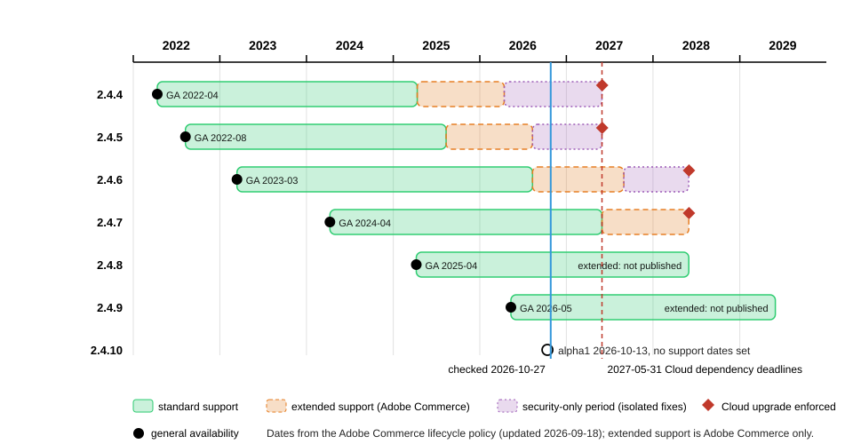

Versions, Lifecycle and Requirements
|
This content was generated with the assistance of AI and should be verified against the official documentation before being relied on in production. |
This page answers three questions before you install anything: which Magento version to run, for how long Adobe and the
community will keep patching it, and which PHP, database, search, cache and queue versions it needs. It was written
against Magento 2.4.9 (generally available 2026-05-12) and checked on 2026-10-27 against the Adobe Commerce lifecycle
policy (last updated 2026-09-18), the released-versions table, the system requirements page (last updated 2026-10-13) and
the Cloud security enforcement policy (updated 2026-10-14). The newest line, 2.4.10, is still in alpha
(2.4.10-alpha1, 2026-10-13) and has no support dates. The community distribution Mage-OS 3.6.0 (2026-10-14) is built
on the 2.4.9 code base and is used for every command run on this page.
The page applies to Magento Open Source, Adobe Commerce on-premises and Adobe Commerce on Cloud. Adobe Commerce as a Cloud Service (the SaaS edition) has no version numbers to manage, because Adobe upgrades it continuously; the Editions and Ecosystem page explains the difference. The running example, Pocket Coffee, is a new shop, so it starts on 2.4.9 with PHP 8.5 (see the last section).
Adobe documents these policies for Adobe Commerce. Magento Open Source follows the same release lines and the same patch
releases (the open source repository tags 2.4.9, 2.4.8-p5, 2.4.7-p10 and 2.4.6-p15, all published on 2026-05-12),
but several tiers, such as extended support, exist for Adobe Commerce only. Each section says where that matters.
How versions are numbered
Adobe Commerce uses semantic versioning on the individual module level (for example magento/framework 101.1.1) but
not for the marketing version number that merchants see. The marketing number has a fixed first part, 2.4, and then
the following meanings.
| Release type | Example | What it is |
|---|---|---|
Major |
|
The platform generation; every current line is a 2.x release. Releases older than 2.4.4 do not appear in the lifecycle table. |
Minor |
|
A minor release can introduce support for major system requirements such as a new PHP version and can include breaking changes, so code written for one minor release may need work on the next. |
Patch |
|
The general availability release of a line ( |
Security patch release |
|
The line number plus |
Alpha and beta |
|
Pre-releases for early testing. Adobe has no obligation to support them, and they must not run a production shop. |
Hotfix |
n/a |
A patch for a high-impact security or quality problem, such as a zero-day vulnerability, delivered through the Quality Patches Tool and included in the next planned release. It may contain backward-incompatible changes. |
Isolated security patch |
|
A non-cumulative, standalone patch file with security fixes only. It is tested only on the latest |
Individual patch |
n/a |
A low-impact quality fix for one specific issue, delivered through the Quality Patches Tool. It never contains backward-incompatible changes. |
Custom patch |
n/a |
A change made by someone other than Adobe, typically a Composer patch applied by an agency. |
One marketing version, hundreds of package versions
bin/magento --version prints the marketing version, but Composer resolves every module by its own version number.
Mage-OS publishes the same code under the mage-os/* vendor name and uses the Composer replace field to stand in for
the magento/* packages, so extensions that require magento/framework or magento/module-catalog keep working. These
read-only commands were run on the local Mage-OS 3.6.0 test shop.
bin/magento --version
composer why magento/framework
composer show mage-os/product-community-edition | head -n 8Source: Composer docs: replace
The first command printed Mage-OS CLI 3.6.0 (based on Magento 2.4.9). The second showed that mage-os/framework 3.6.0
replaces magento/framework (103.0.9) and that other packages require magento/framework. The third showed a
metapackage named mage-os/product-community-edition, version 3.6.0, licensed under OSL-3.0 and AFL-3.0, whose
requirements list 248 mage-os/* packages. In the same shop mage-os/module-catalog 3.6.0 replaces
magento/module-catalog 104.0.9. On a stock Adobe install the same commands print Magento CLI x.y.z and list
magento/* packages in vendor/magento; on Mage-OS that directory does not exist and the code lives in
vendor/mage-os. When an extension asks for a Magento module version, compare it with the module version, not with the
marketing version.
Release cadence and patch history
Adobe Commerce on-premises and on Cloud follows a rhythm of about six patch releases and one minor release per year,
according to the Adobe feature comparison page. All the dates in the released-versions table below are second Tuesdays of the month. The table lists every release of the
2.4.7 and 2.4.8 lines and the 2.4.6 line from 2.4.6-p5, which shows the rhythm and where it changed.
| Date | 2.4.8 line | 2.4.7 line | 2.4.6 line |
|---|---|---|---|
2024-04-09 |
n/a |
2.4.7 (GA) |
2.4.6-p5 |
2024-06-11 |
n/a |
2.4.7-p1 |
2.4.6-p6 |
2024-08-13 |
n/a |
2.4.7-p2 |
2.4.6-p7 |
2024-10-08 |
n/a |
2.4.7-p3 |
2.4.6-p8 |
2025-02-11 |
n/a |
2.4.7-p4 |
2.4.6-p9 |
2025-04-08 |
2.4.8 (GA) |
2.4.7-p5 |
2.4.6-p10 |
2025-06-10 |
2.4.8-p1 |
2.4.7-p6 |
2.4.6-p11 |
2025-08-12 |
2.4.8-p2 |
2.4.7-p7 |
2.4.6-p12 |
2025-10-14 |
2.4.8-p3 |
2.4.7-p8 |
2.4.6-p13 |
2026-03-10 |
2.4.8-p4 |
2.4.7-p9 |
2.4.6-p14 |
2026-05-12 |
2.4.8-p5 |
2.4.7-p10 |
2.4.6-p15 |
Three things stand out. The patch numbers of all supported lines advance together on the same day, so 2.4.7-p10 and
2.4.6-p15 contain the same security fixes for different base releases. There was no -pN release between 2025-10-14
and 2026-03-10, and none for the 2.4.9 line after its GA on 2026-05-12: the released-versions table lists only 2.4.9.
And since mid-2026 Adobe ships monthly isolated builds instead, labelled in the security bulletins as 2.4.9-2026-jul,
2.4.9-2026-aug, 2.4.9-2026-sep and 2.4.9-2026-oct. They are not -pN releases. Treat the security bulletins, not the
version table, as the source of truth for whether a shop is current.
The 2.4.9 line itself went through 2.4.9-alpha1 to alpha3 (the last on 2025-10-14), 2.4.9-beta1 on 2026-03-10 and
GA on 2026-05-12. The open source repository publishes all of them as releases and tags, which is where Open Source users
find the code of each -pN release.
Source: magento2 repository: Releases
Security bulletins since July 2026
The last bulletins show why the cadence matters. Bulletins are published by Adobe; CVE counts and scores come from the bulletins and the National Vulnerability Database. The Security page tells the whole incident history; this table only links releases to bulletins.
| Bulletin | Date | What shipped |
|---|---|---|
APSB26-73 |
2026-07-14 |
14 CVEs, highest score 9.6; fixed in the |
APSB26-92 |
2026-08-11 |
7 CVEs, highest score 9.1; fixed in |
APSB26-146 |
2026-09-07 |
CVE-2026-75650, score 10.0, unauthenticated code execution exploited in the wild; delivered as a hotfix ( |
APSB26-138 |
2026-09-08 |
8 CVEs, highest score 9.3; fixed in |
APSB26-153 |
2026-10-13 |
11 CVEs, highest score 10.0; fixed in |
Which patch to apply
The rules above reduce to a short decision. Hotfixes are the exception: Adobe provides them to all customers on a
supported version, even when they are not on the latest -pN. Isolated patches need the latest -pN first.
Adobe Commerce customers fetch hotfixes and isolated patches with the Quality Patches Tool. Its check for the APSB26-146 hotfix, published in the Adobe knowledge base, is the command below; it was not run here because it needs an Adobe Commerce installation with the tool installed.
vendor/bin/magento-patches -n status | grep "39341\|Status"Lifecycle and end-of-support dates
Adobe offers a three-year standard support window from general availability for each release line. Standard
support includes quality fixes (through Adobe support or the self-serve Quality Patches Tool), security patches
(cumulative -pN releases and isolated patch files) and hotfixes. Adobe adds two shorter tiers for older lines:
-
Extended support: one more year at no additional cost for Adobe Commerce customers, with quality and security patches for the core application. It is documented for the 2.4.6 and 2.4.7 lines.
-
Security-only transitional period: a one-time, time-limited period for 2.4.4, 2.4.5 and 2.4.6 (whose extended support ended or ends in 2025 and 2026) with limited isolated security fixes and no quality fixes. Adobe states that it will not be extended beyond the published dates and should be used as migration time.
Extended support security patches are available to Adobe Commerce customers only; they are not available for the Magento Open Source code base. Adobe’s pages promise nothing equivalent for Open Source, so treat the standard end date as the planning deadline for an Open Source shop.
| Line | General availability | End of standard support | End of extended support | End of security-only period | Cloud upgrade enforcement |
|---|---|---|---|---|---|
2.4.9 |
2026-05-12 |
2029-05-31 |
not published |
n/a |
not set |
2.4.8 |
2025-04-08 |
2028-05-31 |
not published |
n/a |
not set |
2.4.7 |
2024-04-09 |
2027-05-31 |
2028-05-31 |
n/a |
2028-06-01 |
2.4.6 |
2023-03-14 |
2026-08-11 |
2027-08-31 |
2028-05-31 |
2028-06-01 |
2.4.5 |
2022-08-09 |
2025-08-12 |
2026-08-11 |
2027-05-31 |
2027-06-01 |
2.4.4 |
2022-04-12 |
2025-04-12 |
2026-04-14 |
2027-05-31 |
2027-06-01 |

Two of Adobe’s own pages disagree, and the table above follows the lifecycle policy. The released-versions page still says that the one-year extension applies to 2.4.4 and 2.4.5, while the lifecycle policy, whose tables carry dates for every line, gives it to 2.4.6 and 2.4.7 and says the extended support of 2.4.4 and 2.4.5 ends in April and August 2026 as planned. For the 2.4.8 and 2.4.9 lines the extended support dates are not published yet.
Adobe does not provide security or quality fixes for the third-party software a shop runs on, such as PHP, MariaDB, OpenSearch, Valkey or RabbitMQ, when that software reaches its own end of life during the support window. The lifecycle page gives two cases that matter for PCI compliance: PHP 8.1 ended on 2025-12-31 (affecting 2.4.4 to 2.4.6) and PHP 8.2 ends on 2026-12-31 (affecting 2.4.6 where PHP 8.2 is used). A supported Magento line on an unsupported PHP is not a supported shop.
Cloud enforcement deadlines
Adobe Commerce on Cloud (the PaaS edition) has a stricter rule than a self-hosted shop: environments that run an unsupported Commerce version or unsupported third-party dependencies can have Admin access suspended while the storefront stays online, and/or inbound traffic suspended, which takes the storefront offline. An environment that stays non-compliant after traffic suspension can have its cloud services terminated, which permanently deletes its instances, environments, branches, data and assets. The policy applies to Cloud environments running 2.4.4 to 2.4.9. It does not apply to Adobe Commerce as a Cloud Service or to on-premises deployments.
| Your Cloud version | Third-party dependencies | Adobe Commerce version |
|---|---|---|
2.4.4 or 2.4.5 |
By 2026-10-30 |
Upgrade to the latest version or migrate to the Cloud Service by 2027-06-01 |
2.4.6 or 2.4.7 |
By 2026-10-30 or 2027-05-31, depending on the software |
By 2028-06-01 |
2.4.8 or 2.4.9 |
By 2026-10-30 or 2027-05-31, depending on the software |
Not required at this time |
The dependency deadlines of the policy depend on the software.
| Dependency | Version found | Must upgrade to | Deadline |
|---|---|---|---|
PHP |
8.1 and below |
8.2 or higher |
2027-05-31 |
MariaDB (including Galera) |
10.5 and below |
10.6 or higher |
2026-10-30 |
MariaDB (including Galera) |
above 10.5 but below 10.11 |
10.11 or higher |
2027-05-31 |
Elasticsearch |
any version |
OpenSearch 2.19 (2.4.4 and 2.4.5), OpenSearch 3 (2.4.6 and later) |
2026-10-30 |
OpenSearch |
1.x |
OpenSearch 2.19 (2.4.4 and 2.4.5), OpenSearch 3 (2.4.6 and later) |
2027-05-31 |
Redis |
5 and below |
Valkey 8 or higher |
2027-05-31 |
RabbitMQ |
3.9 and below |
3.13 or higher |
2026-10-30 |
RabbitMQ |
above 3.9 but below 3.13 |
4.3 or higher |
2027-05-31 |
On the check date of this page (2026-10-27) the first dependency deadline, 2026-10-30, is three days away. Elasticsearch to OpenSearch and Redis to Valkey are migrations to different software, not version upgrades, so custom code, extensions and configuration that mention the old service may need changes. On Cloud you cannot upgrade the services yourself: you open a support ticket at least 30 days before the deadline so that Adobe can schedule the work, and you upgrade and test a non-production environment first, covering at least checkout, search, cart and your integrations.
System requirements
Adobe supports only the combinations of software listed in the system requirements tables; it does not validate configurations that differ from a listed combination. For example, Adobe Commerce 2.4.9 is tested with MariaDB 12.3, so a 2.4.9 shop on MariaDB 11.8 is outside the tested configuration even if it runs. Adobe Support may ask you to align your environment before it investigates a problem. The tables below show the latest patch of each line on-premises, as listed on 2026-10-27.
| Component | 2.4.9 | 2.4.8-p5 | 2.4.7-p10 | 2.4.6-p15 | 2.4.5-p17 | 2.4.4-p18 |
|---|---|---|---|---|---|---|
PHP |
8.5 |
8.4, 8.3 |
8.3, 8.2 |
8.2, 8.1 |
8.1 |
8.1 |
Composer |
2.10 |
2.10 |
2.10 |
2.2.26+ |
2.2.26+ |
2.2.26+ |
MariaDB |
12.3 |
11.4, 11.8 |
10.11, 11.8 |
10.11 |
10.11 |
10.6 |
MySQL |
8.4 |
8.4 |
not supported |
not supported |
not supported |
not supported |
Search engine |
OpenSearch 3 |
OpenSearch 3, Elasticsearch 8 |
OpenSearch 2.19 and 3, Elasticsearch 8 |
OpenSearch 2.19 and 3 |
OpenSearch 2.19 |
OpenSearch 2.19 |
Cache and sessions |
Valkey 9 |
Valkey 8.1 |
Valkey 8.1 |
Valkey 8.1 |
Valkey 8.1 |
Redis 7.2 |
Message queue |
RabbitMQ 4.3, ActiveMQ Artemis 2 |
RabbitMQ 4.3, Artemis 2 |
RabbitMQ 4.3, Artemis 2 |
RabbitMQ 4.3, Artemis 2 |
RabbitMQ 4.3, Artemis 2 |
RabbitMQ 3.13 and 3.9 |
Varnish |
8 |
8 |
8 |
8 |
8 |
7.7 |
nginx |
1.30 |
1.30 |
1.30 |
1.30 |
1.30 |
1.30 |
Read the table with these points in mind.
-
PHP. The system requirements page lists only PHP 8.5 for 2.4.9. The 2.4.9 release notes say PHP 8.5 is fully supported and that PHP 8.4 is allowed for upgrade purposes only (not recommended for production), and that PHP 8.2 and 8.3 are no longer supported. Present PHP 8.5 as the production target. The Composer constraint of the open source repository is wider (
~8.3.0||~8.4.0||~8.5.0at tag 2.4.9), so Composer installs on PHP 8.3 and 8.4, but those combinations are not tested by Adobe. -
Database. MySQL 8.0 reached end of support on 2026-04-30, so lines 2.4.7 and older do not list MySQL at all for the latest patch, and Adobe strongly recommends MariaDB for them. On 2.4.9 the on-premises table lists MariaDB 12.3 and MySQL 8.4. The Cloud table lists MariaDB 12.3 (recommended) and 11.8.
-
Search. Elasticsearch 7.17 reached end of support on 2026-01-15. Elasticsearch is no longer listed for 2.4.9; OpenSearch 3 is the tested engine, and OpenSearch 2 compatibility is kept.
-
Cache. Valkey 9 is the tested cache and session store for 2.4.9, and Redis is not listed. The 2.4.9 and Mage-OS 3.6.0 installers have their own
--cache-backend-valkey-*,--page-cache-valkey-*and--session-save-valkey-*options alongside the older*-redis-*ones. The Composer client packages (colinmollenhour/cache-backend-redis,colinmollenhour/credis) still use the wordredis, because Valkey speaks the Redis protocol. The release notes explain the change by the end of support of Redis 7.2 and the Redis licence changes. -
Queues. The 2.4.9 table lists RabbitMQ 4.3 and ActiveMQ Artemis 2. The release notes still say RabbitMQ 4.2 in one place; follow the table. The release notes call Apache ActiveMQ Artemis the long-term replacement for RabbitMQ.
-
Web server. The on-premises table lists nginx 1.30 and Varnish 8. Cloud environments include the Fastly CDN, so the Cloud table has no Varnish row.
The Cloud table for 2.4.9 lists Composer 2.10, OpenSearch 3, MariaDB 12.3 (recommended) or 11.8, New Relic 12.5.0 or later, PHP 8.5, RabbitMQ 4.3, ActiveMQ Artemis 2, Valkey 9 and nginx 1.30. The alpha table of the next line, 2.4.10, lists PHP 8.5, MariaDB 12.3, MySQL 8.4 (on-premises), OpenSearch 3.7 or later, Valkey 9.0, RabbitMQ 4.3, Artemis 2.54.0 and Composer 2.10.2 or later, so the 2.4.9 platform is expected to carry over.
Platform changes in 2.4.9
A minor release can change the platform under your code. The 2.4.9 release notes and the backward-incompatible changes pages list, among others, these changes that affect requirements and extensions.
-
Native MVC implementation replaces Laminas MVC. The Laminas component libraries (
laminas-http,laminas-filter,laminas-validatorand others) are still installed, as the local Mage-OS 3.6.0 shop shows, so only the MVC layer was replaced. -
symfony/cachereplacesZend_Cache(Symfony 7.4 LTS components). The local shop hassymfony/cache 7.4.21. -
HugeRTE replaces TinyMCE as the WYSIWYG editor, because TinyMCE 5 and 6 reached end of support and TinyMCE 7 has an incompatible licence.
-
PHPUnit 12 is the tested version (the local shop has
phpunit/phpunit 12.5.42). -
GraphQL gets a default limit of 10 aliases per request and a default query length limit of 1,048,576 characters (about 1 MB), configurable in the Admin under GraphQL Input Limits.
-
CAPTCHA is enforced for REST and GraphQL customer account creation when CAPTCHA is enabled for the Create Account form.
-
About 69 XSD files are removed, among them
webapi.xsd,webapi_base.xsd,webapi_merged.xsd,webapi_async.xsdandcsp_whitelist.xsd; the count is the number of files listed on the backward-incompatible changes page.
Source: Adobe Commerce docs: 2.4.9 release notes and Adobe Commerce developer docs: Backward-incompatible changes
Mage-OS 3.6.0 is not byte-identical to Adobe’s 2.4.9, so checks on it cannot confirm every removal: its code still ships
webapi.xsd and csp_whitelist.xsd, and on the local shop a GraphQL query with 11 aliases was accepted even though the
default limit is 10. The Upgrades page covers the work these changes cause.
The tested stack on Mage-OS
Mage-OS wraps the same platform and publishes its own requirements. The mage-os/product-community-edition metapackage at
3.6.0 requires php ~8.3.0||~8.4.0||~8.5.0, the same constraint as the open source repository at 2.4.9, so a 3.x shop
can run on PHP 8.3 to 8.5, and Mage-OS does not make Adobe’s tested matrix any wider. The local test shop used this stack,
all current on 2026-10-27.
| Component | Version on the local shop |
|---|---|
Distribution |
Mage-OS 3.6.0, based on Magento 2.4.9 |
PHP |
8.5.12 (Apache 2.4.69, mod_php) |
Composer |
2.10.3 |
Database |
MariaDB 11.8.9 (Adobe’s on-premises 2.4.9 table lists 12.3) |
Search |
OpenSearch 3.9.0 |
Cache, page cache and sessions |
Valkey 9.1.3 |
Modules enabled by default |
319 |
Source: Mage-OS Composer repository
Checking what you run
An audit of a shop is a handful of commands. Each one prints a version you can compare with the tables above. The
commands were run against the local Mage-OS shop (as the web server user inside its container); on your own server use
the service names of your environment. The search engine and cache hosts come from env.php or the Admin, so read them
from bin/magento config:show instead of guessing.
bin/magento --version # Mage-OS CLI 3.6.0 (based on Magento 2.4.9)
php -v | head -n 1 # PHP 8.5.12 (cli)
composer --version # Composer version 2.10.3
composer check-platform-reqs # every line should say "success"
bin/magento config:show catalog/search/engine # opensearch
bin/magento deploy:mode:show # Current application mode: developer.
mariadb --version # or: mysql --version
valkey-server --version # or: redis-server --version
curl -s http://localhost:9200 | grep number # the OpenSearch version numbercomposer check-platform-reqs printed success for 31 requirements and no failure, including PHP 8.5.12, ext-intl,
ext-sodium, ext-soap, ext-xsl and lib-libxml. To make Composer resolve packages for a PHP version other than the
one that runs Composer (for example from a build server that has a newer PHP), pin it in the root composer.json, which
was checked in a scratch project with the command below.
composer config platform.php 8.5.0
composer config repositories.0 composer https://repo.mage-os.org/Source: Composer docs: platform
The result is a config.platform.php entry of 8.5.0 and a Composer repository entry for the Mage-OS repository; a
Magento Open Source or Adobe Commerce project uses https://repo.magento.com/ instead, with Marketplace access keys.
A support-status script
The lifecycle table is data, so it is easy to turn into a script that tells you, for any version string and day, which
support phase it is in. The script below hard-codes the dates of the lifecycle policy for the 2.4.4 to 2.4.9 lines, parses
strings such as 2.4.8-p3 or the monthly build label 2.4.9-2026-oct, and applies the extended and security-only tiers
only to the commerce edition, because Adobe offers them for Adobe Commerce only. Update the table whenever Adobe
changes it.
#!/usr/bin/env php
<?php
declare(strict_types=1);
/**
* Prints the support status of a Magento / Adobe Commerce version string
* on a given day, using the dates of the Adobe Commerce lifecycle policy.
*
* Usage: php support-status.php 2.4.8-p3 [YYYY-MM-DD] [open-source|commerce]
*/
const LIFECYCLE = [
// line GA end of standard end of extended end of security-only Cloud enforcement
'2.4.9' => ['2026-05-12', '2029-05-31', null, null, null],
'2.4.8' => ['2025-04-08', '2028-05-31', null, null, null],
'2.4.7' => ['2024-04-09', '2027-05-31', '2028-05-31', null, '2028-06-01'],
'2.4.6' => ['2023-03-14', '2026-08-11', '2027-08-31', '2028-05-31', '2028-06-01'],
'2.4.5' => ['2022-08-09', '2025-08-12', '2026-08-11', '2027-05-31', '2027-06-01'],
'2.4.4' => ['2022-04-12', '2025-04-12', '2026-04-14', '2027-05-31', '2027-06-01'],
];
[$script, $version] = [$argv[0], $argv[1] ?? ''];
$today = $argv[2] ?? date('Y-m-d');
$edition = $argv[3] ?? 'commerce';
if (!preg_match('/^(2\.4\.\d+)(?:-(p\d+|alpha\d*|beta\d*|\d{4}-[a-z]{3}))?$/', $version, $m)) {
fwrite(STDERR, "Usage: php $script 2.4.8-p3 [YYYY-MM-DD] [open-source|commerce]\n");
exit(2);
}
[$line, $suffix] = [$m[1], $m[2] ?? ''];
if ($line === '2.4.10') {
echo "$version: development line, no support dates set\n";
exit(0);
}
if (!isset(LIFECYCLE[$line])) {
echo "$version: line $line is older than 2.4.4 and out of support\n";
exit(0);
}
[$ga, $standardEnd, $extendedEnd, $securityOnlyEnd, $cloudEnforcement] = LIFECYCLE[$line];
$phase = match (true) {
$today < $ga => 'not generally available yet',
$today <= $standardEnd => "standard support (until $standardEnd)",
$extendedEnd !== null && $edition === 'commerce' && $today <= $extendedEnd => "extended support, Adobe Commerce only (until $extendedEnd)",
$securityOnlyEnd !== null && $edition === 'commerce' && $today <= $securityOnlyEnd => "security-only period, Adobe Commerce only (until $securityOnlyEnd)",
$edition !== 'commerce' && $today > $standardEnd => 'past standard support (extended support is Adobe Commerce only)',
default => 'out of support',
};
$kind = match (true) {
$suffix === '' => 'GA release of the line',
str_starts_with($suffix, 'p') => "security patch release $suffix",
str_starts_with($suffix, 'alpha'), str_starts_with($suffix, 'beta') => 'pre-release',
default => "monthly isolated build ($suffix)",
};
printf("%-14s line %s, %s\n", $version, $line, $kind);
printf(" on %s as %s: %s\n", $today, $edition, $phase);
if ($cloudEnforcement !== null && $edition === 'commerce') {
printf(" Adobe Commerce on Cloud: version upgrade enforced from %s\n", $cloudEnforcement);
}php -l reported no syntax errors on PHP 8.5.12, and these calls were run with the check date 2026-10-27.
php support-status.php 2.4.9 2026-10-27
php support-status.php 2.4.6-p15 2026-10-27
php support-status.php 2.4.5-p17 2026-10-27
php support-status.php 2.4.6-p15 2026-10-27 open-source
php support-status.php 2.4.9-2026-oct 2026-10-27
php support-status.php 2.4.10-alpha1Source: PHP manual: match
The outputs were, in the same order: 2.4.9 in standard support until 2029-05-31; 2.4.6-p15 in extended support
(Adobe Commerce only) until 2027-08-31 with Cloud enforcement from 2028-06-01; 2.4.5-p17 in the security-only period
(Adobe Commerce only) until 2027-05-31 with Cloud enforcement from 2027-06-01; 2.4.6-p15 as Open Source reported as past
standard support, because extended support is for Adobe Commerce only; 2.4.9-2026-oct recognised as a monthly isolated
build of the 2.4.9 line; and 2.4.10-alpha1 as a development line without support dates. A malformed version string
exits with status 2 and prints the usage line. The PHP basics used here are in the
PHP section.
Choosing a version for Pocket Coffee
Pocket Coffee is a new single-store shop with no legacy code, so every choice follows the newest supported option.
| Decision | Choice | Reason |
|---|---|---|
Release line |
2.4.9, or the Mage-OS 3.x line that tracks it |
It is the newest generally available line, with standard support until 2029-05-31 and no Cloud enforcement date set. |
PHP |
8.5 |
The only version in Adobe’s 2.4.9 table; PHP 8.2 reaches its end of life on 2026-12-31 and PHP 8.1 already has. |
Database |
MariaDB 12.3 (on Adobe’s stack) |
It is the tested version for 2.4.9; the local test shop runs MariaDB 11.8.9, which works but is outside the tested combination. |
Search |
OpenSearch 3 |
Elasticsearch is not listed for 2.4.9 and Elasticsearch 7.17 is out of support. |
Cache and sessions |
Valkey 9 |
Redis is not listed for 2.4.9. |
Queue |
RabbitMQ 4.3 or ActiveMQ Artemis 2 |
Both are in the 2.4.9 table; RabbitMQ was not run on the test shop. |
Patching |
Track the Adobe bulletins and the Mage-OS releases monthly |
Isolated builds and hotfixes need the latest release of the line, so skipping a month makes the next one harder. |
The shop has no budget for Adobe Commerce, so it runs on Magento Open Source or Mage-OS; the Editions and Ecosystem page weighs the two. The next steps are Installation and Local Development Environments.
This page could not run everything it describes. The Quality Patches Tool, the Adobe bulletin pages (they refuse automated
requests), the Cloud enforcement process and any repo.magento.com install need Adobe credentials or an Adobe Commerce
installation and were documented from the official pages only. RabbitMQ, ActiveMQ Artemis, Varnish and nginx were not
part of the local stack, and the Adobe-only 2.4.9 differences cannot be shown on Mage-OS.